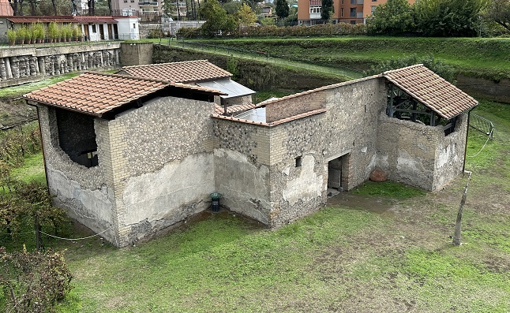
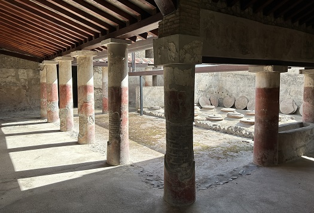
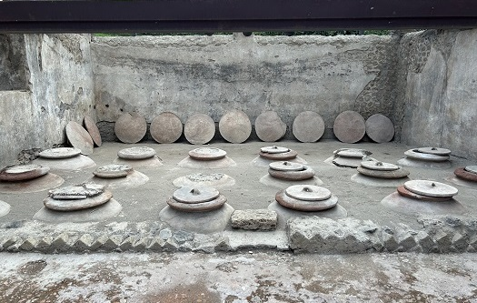
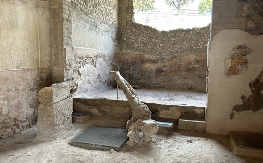
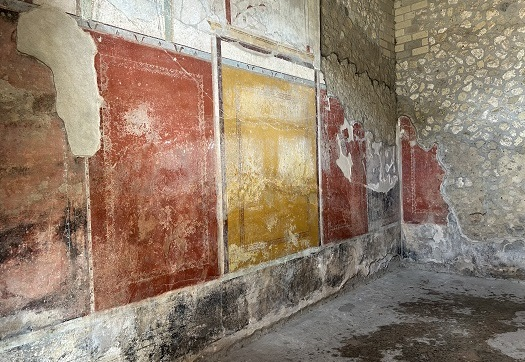

BOSCOREALE
los hallazgos sugieren que Boscoreale, en el siglo II a.e.c era un pagus de Pompeya. Después de
la erupción se volvió a ocupar, se han hallado tumbas del siglo IV.
Destacan tres villas:
Villa Regina.
Villa rural de época romana que algunos la identifican con el Pagus
Augustus Felix Suburbanus.
Villa Regina fue construida en el siglo I a.e.c y ampliada durante
el siglo I. Se conserva la parte destinada a la vivienda, ricamente
decorada, con frescos del tercer y cuarto estilo; y termas. La parte
rustica estaba destinada sobre todo a la viticultura. La villa tenía
un granero y consta de varias habitaciones dispuestas en los tres
lados de un patio abierto, donde se encuentra la bodega con 18 dolia.
También destaca el torcularium con los restos de la prensa de madera
con agujeros y cabinas para su fijación al suelo, el tanque de
prensado y el recipiente para el mosto.
Durante la excavación, en el pórtico se halló un carro de
transporte, plaustrum, del que se conservan las huellas de las
ruedas en la tierra, en un callejón adyacente a la villa.
Junto a ella se halla el Museo Antiquarium.

|

|

|
|
 |
 |
|
|
|